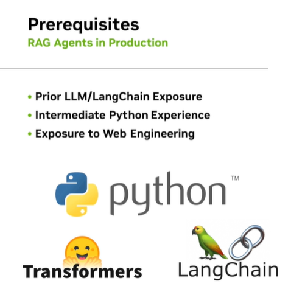

一、使用 LLM 构建 RAG 代理
简介
学习目标
- 编写一个 LLM 系统，该系统可以通过利用内部和外部推理组件与用户进行可预测的交互。
- 设计一个对话管理和文档推理系统，用于维护状态并将信息强制转换为结构化格式。
- 利用嵌入模型进行高效的相似性查询，以实现内容检索和对话防护。
- 实施、模块化和评估 RAG 代理，该代理可以回答有关其数据集中研究论文的问题，而无需任何微调。
内容主题
涵盖的主题包括：LLM推理接口、使用LangChain、Gradio和LangServe进行流水线设计、运行状态的对话管理、文档处理、用于语义相似性和护栏的嵌入、以及RAG Agent的向量存储。每个部分都旨在为参与者提供必要的知识和技能，以有效开发和部署先进的LLM系统。
嵌入（Embeddings）是一种将文本或其他数据转换为向量表示的技术。这种表示方式能够捕捉数据中的语义信息，使得计算机可以更有效地进行处理和分析。
语义相似性（Semantic Similarity）指的是衡量两个文本片段在意义上的相似程度。嵌入通过将文本转化为向量来表示，可以利用向量之间的距离（如余弦相似度）来计算文本之间的语义相似性。例如，如果两个句子具有相似的主题或意思，那么它们的嵌入向量之间的距离就会较小。
在应用中，语义相似性可以用于： - 信息检索：根据查询找到语义上最相关的文档。 - 推荐系统：根据用户偏好推荐相似的内容。 - 文本聚类：将具有相似主题的文本分组。
护栏（Guardrailing）在AI和机器学习中指的是一组用于限制或引导模型输出的规则和机制，确保模型行为在预期范围内。对于LLM（大语言模型），护栏可以用于： - 避免不当输出：防止模型生成有害或不合适的内容。 - 增强安全性和可靠性：确保模型在规定范围内工作，不偏离既定目标。 - 提高准确性：通过嵌入和语义分析来识别潜在错误或偏差，进行自动校正或提示。
在实践中，可以结合语义嵌入来实现护栏，例如，通过比较模型输出和期望结果之间的语义相似性来检测偏离和异常情况，进而触发相应的纠正措施。这种方法可以帮助在部署和使用AI系统时保持更高的安全性和可靠性。
课程大纲
- 介绍NVIDIA Deep Learning Institute 并设置环境。
- 探索 LLM 推理接口和微服务。
- 使用 LangChain、Gradio 和 LangServe 设计 LLM 管道。
- 管理对话状态并集成知识提取。
- 处理长格式文档的策略。
- 利用嵌入实现语义相似性和护栏。
- 实现向量存储以实现高效的文档检索。
- 评估、评估和认证。
复现步骤
Step 1 介绍NVIDIA Deep Learning Institute 并设置环境
- 课程重点
-
前置条件
- Python
- LangChain
- Web 开发 